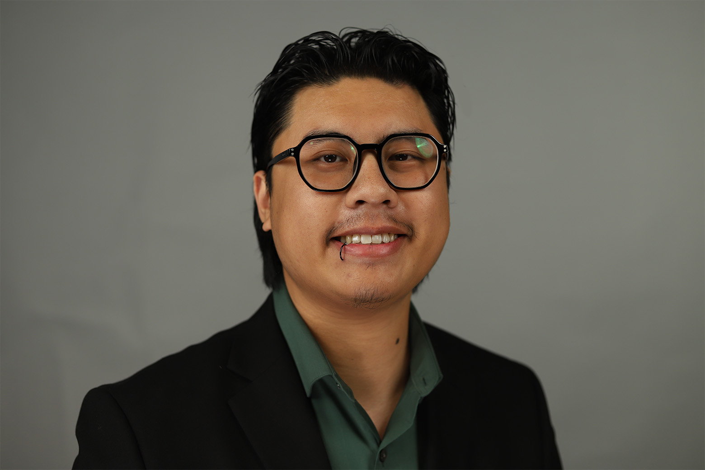
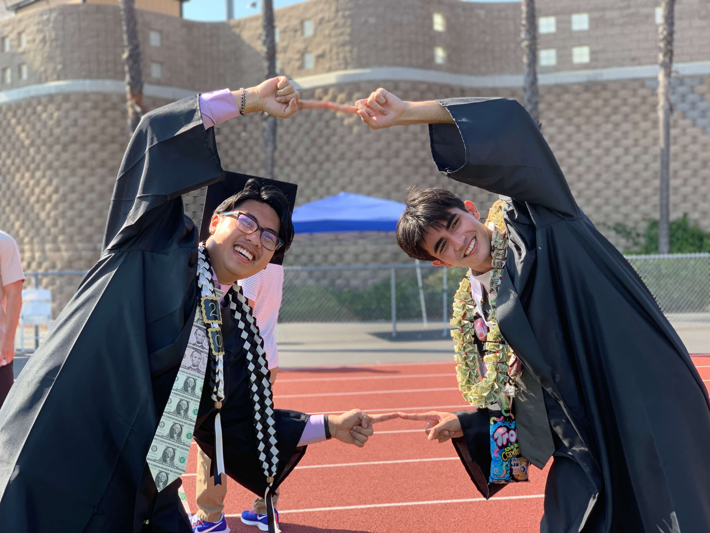

About Me!
My name is Cameron Lee, I am currently a fourth year computer science student in
my hometown at San Diego State University. I love learning and absorbing as much as I can from
those around me. I am extremely passionate in computer science and the tech industry as a whole.
I'm currently studying to get my Bachelor's of Science in Computer Science and I hope to have
the opportunity to complete my Master's somewhere that I can learn and grow to my fullest potential.
I am a full time student but I also work full time to support myself, so unfortunately I don't get
to dedicate as much time as I'd like to the passion, but I still find the time whenever I can :).
If you'd like to know more about me, or would just like to chat you can reach out to me
here!

Hi that's me
Passions
There are a few topics that if brought up, you could not stop me from yapping about. The big
ones include, but are not limited to: video games, music, food, aquariums, mycology, and the
meaning of life. The TL;DR is: I love making video games; I play the drums and have played in
a few small bands; I am a huge foodie and will eat just about anything (my favorites are sushi,
mexican food, and wings); I love aquariums and aquascaping, I mainly keep Cherry Shrimp (Neocaridina);
I find mycology (study of mushrooms) super interesting and have become obsessed with breeding
mycelium cultures on agar plates; I love discussing life & the world around us, and having my ideas
challenged. I think we are always changing and I enjoy discovering new perspectives.
Video Games
I've always loved video games from a young age. I grew up with hand-me-down nintendo consoles and
playing on the Xbox with my dad. Pokemon was my go-to as a kid, and when I finally got my own
laptop one of the first games I got into was Starcraft II, my dad had played Starcraft throughout
college and I often watched him play from a young age. The next game I got incredibly sucked into
was Minecraft. Like most kids my age, I loved watching Minecraft Youtubers and the moment I could
play it myself, I sunk countless hours into it. My favorite genre of game, which I draw major
inspiration from, is the beautiful world of Roguelikes. Games like The Binding of Isaac, Enter
The Gungeon, FTL, Dome of the Keeper, and Nubby's Number Factory are all some of my favorite
games that are definitely worth checking out.
I feel that video games are a beautiful form of expression that can bring experiences like no other.
Video Games can truly transport you into new worlds and experiences and provide both strong emotions,
and silly entertainment. The art of video games is something that is incredibly unique and I feel
a strong sense to preserve. Following this, me and my best friend
Jason, have decided to take our love and passion for
video games and to channel that into our own vision. Together, we created our game studio,
Greedy Gauntlet. We haven't put anything official out yet,
but be on the lookout because there will be big things coming.

Cameron and Jason, founders of Greedy Gauntlet Games, celebrating high school graduation
Spirituality
Outside of my work in computer science, I'm deeply interested in introspection,
meditation, and philosphy. I was raised a Vietnamese American, so naturally I
grew up in Mahāyāna Buddhist tradition, with its rich emphasis on compassion,
balance, and ancestral connection. While I initally engaged in rituals out of
cultural rhythm rather than personal connection, those early experiences planted the seeds
of a deep inner curiosity.
Today, my spiritual views are more personal and self-defined. They're shaped through meditation,
self-introspection, and a blend of Buddhist, Taoist, and Existential ideas.
I believe in a kind of energetic interconnectedness, and that meaning is not
something inherently given to us, but rather something we have to define for
ourselves. Medition, for me, isn't an escape. It is a dialogue with the unknown.
A space to question, to reflect, and to make peace with uncertainty.
This mindset guides how I approach both life and technology: with intentionality,
humility, and a sense that even in a universe devoid of meaning, we can still
have the power to build systems,
and lives
, with intention,
thoughtfulness, integrity, and balance.